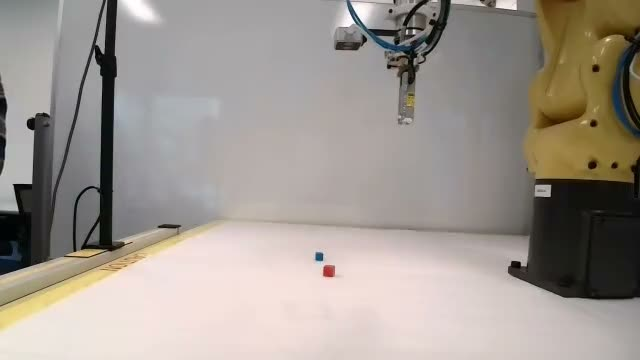

Safety stays outside the AI
Generated plans are drafts. A separate human approval gate and the operator-controlled SIDC client are the only path to motion. The policy defaults to mock mode.
Rockwell Automation × NVIDIA Innovation Lab · Fall 2026 · Dataset 3
An adaptive workcell for the FANUC ER-4iA. A worker records the task once on video; we turn it into safe, reviewable robot instructions. They photograph the part; we rebuild it in 3D so custom fingers and fixtures can be designed around it.

01 · Live demoUpload an instructional recording and get step-by-step FANUC policy instructions: waypoints, plan.json and a TP program.
Drop photos or a walk-around video of a part and get a measurable 3D model in mm, ready to export as STL for custom fingers and fixtures.
Supervised commissioning run r20261020-5fea53 on the official FANUC testbed, Oct 20, 2026.
Honest boundary: home→A was verified (settled 2.53 mm from target). The A→B leg did not execute because the waypoint tolerance was tighter than the measured servo residual; the gate is now 5 mm and A→B is the next acceptance test.
Recorded demonstration → machine policy instructions for the FANUC ER-4iA.
Sample: official testbed side camera, Oct 19 trial (operator-ended). Upload any phone video of a pick-and-place to try your own.
| # | Step | X | Y | Z | W | P | R | Grip |
|---|---|---|---|---|---|---|---|---|
| No waypoints yet. | ||||||||
// plan appears here
! TP program appears here
Photos or a walk-around video → a measurable 3D model you can design fingers and fixtures against.
Sample: 12 views of a custom parallel-gripper finger.
The two halves meet at the robot: the video tells it what to do, the model tells us what it's holding.
Generated plans are drafts. A separate human approval gate and the operator-controlled SIDC client are the only path to motion. The policy defaults to mock mode.
Output is the testbed's native format: 7-D TCP actions [x, y, z, w, p, r, grip] in UF0, 10 Hz, capped at 2 mm and 1° per action.
A scaled mesh of the workpiece lets us design custom aluminium fingers for the SMC MHZL2-16D2 gripper and verify the grasp in Isaac Sim before cutting metal.
Every claim carries a run ID, a baseline and a failure analysis. We show what didn't work alongside what did.
MSOE AI Club × UWM Connected Systems Institute × Rockwell Automation × NVIDIA